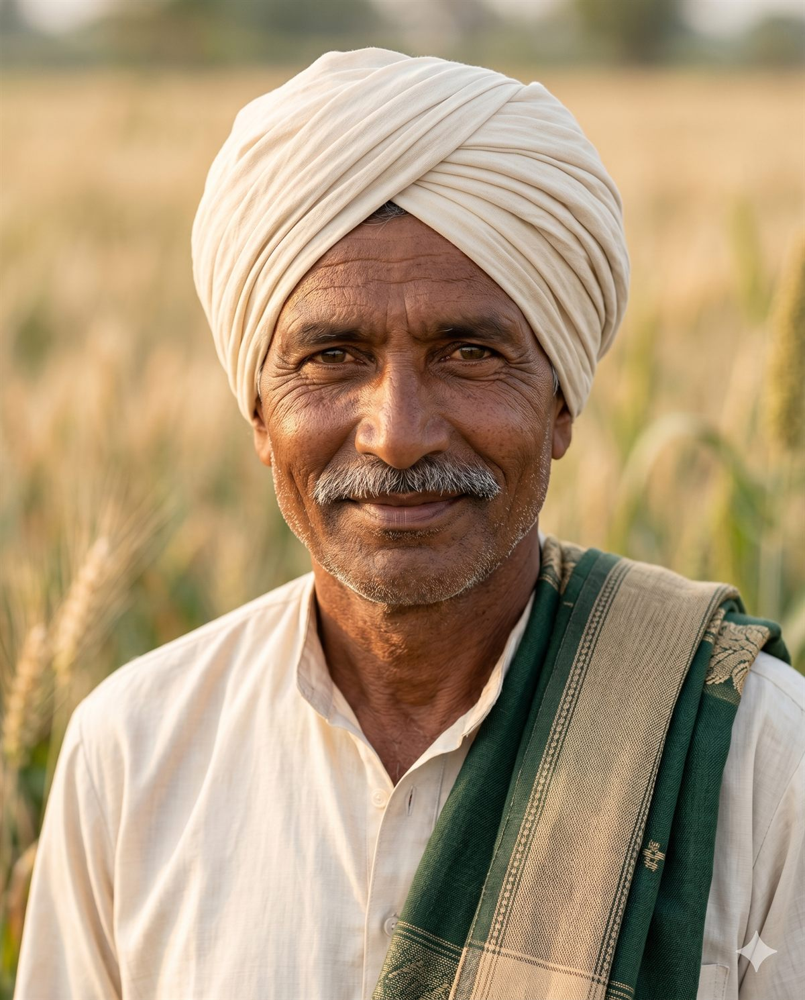

Homeo Agro Solutions is committed to providing farmer-friendly agro-purpose products for crop growth, plant health, pest management and sustainable farming practices.

An alternative to chemical fertiliser has now arrived with a new solution. This solution has been made possible in the form of homeopathic fertiliser, which works as a natural and organic fertiliser.
In modern agriculture, along with increasing crop production, the protection of soil, plants, the environment, and human health has also become an important subject for everyone. Considering the continuously rising costs, dependence on chemical fertilisers and pesticides, and crop-related problems such as pests, diseases, and nutritional deficiencies, farmers are now looking for alternatives that are affordable, low-cost, capable of supporting higher production, simple to use, helpful for crop growth, and able to make farming safer and more balanced.
Keeping this need in mind, Bala Ji Homeo Agro Solutions, District Hardoi, Uttar Pradesh, has introduced a special range of Homeo Agro products for farmers. These Homeo Fertilisers are prepared only for agricultural and plant use. According to the company, these products can be used to support crop production growth, pest control, virus and insect-related problems, and crop nutrition. The products manufactured by Bala Ji Homeo Agro are non-chemical and non-toxic.
Non-chemical and non-toxic agro-purpose products that contribute to healthier crops and better agricultural output across India.
From sowing to growth, pest control and final crop development — we provide crop-friendly products tailored to the moments that matter most.
Our products are designed to be used at the right moment in the crop cycle.
Apply directly in soil at the time of sowing. Plantowin-D and Virosil work at this stage.
When the plant begins to grow and first watering is applied — Uri Fast, Plantowin-K and Virosil can be applied.
Reapplication of crop nutrition support products to sustain growth through development phase.
Additional applications may be given during any later watering as required.
Last Tuch is sprayed directly on the plant at the final stage to support stimulation, fruiting and better growth.
Our label reflects associations with internationally recognised standards.
Whether you're a farmer, dealer or distributor — we're ready to help you grow.